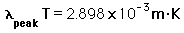

Radiated Power from Blackbody
When the temperature of a blackbody radiator increases, the overall radiated energy increases and the peak of the radiation curve moves to shorter wavelengths. When the maximum is evaluated from the Planck radiation formula, the product of the peak wavelength and the temperature is found to be a constant.
|  |
|
The radiated power in a given wavelength interval Δλ at wavelength λ can be approximated by
The above approximate calculation for the radiated power in a chosen wavelength range is a brute force sum over 100 terms formed by dividing the specified wavelength range into 100 parts. This is then compared to the total radiated power calculated from the Stefan-Boltzmann equation. You can check out the calculation by choosing the wavelength range so that it covers essentially all the radiated energy. You will find that the calculation diverges if you pick a starting wavelength too close to zero, and if you put in too large a wavelength. But by examining the wavelength range for which the radiated power appears to be significant, you can choose reasonable limits on wavelength and confirm that you get essentially all the radiated power.
Blackbody radiation concepts
| HyperPhysics***** Quantum Physics | R Nave |